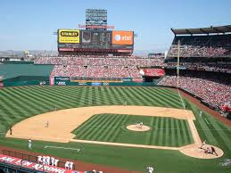

Regresar
Beisbol
El béisbol (del inglés baseball; de base, y ball, 'pelota'), también llamado baseball o juego de pelota, es un deporte de equipo jugado por dos equipos de nueve jugadores cada uno.
Es considerado uno de los deportes más populares en República Dominicana, Panamá, Corea del Sur, Cuba, Estados Unidos, Curazao, Aruba, Japón, Nicaragua, Puerto Rico, Taiwán, México y Venezuela, y no tan popular, pero con una cantidad importante de aficionados, en países como Canadá, Australia, Sudáfrica, Colombia, China, Países Bajos, Nueva Zelanda e Italia. Los países considerados potencias de este deporte se encuentran en América (Norte y el Caribe) y se juega en un gran campo cubierto completamente por césped natural o artificial, con excepción de una zona llamada línea del corredor, donde los jugadores de la ofensiva corren para alcanzar las bases ubicadas en los vértices del área cuadrangular llamada diamante, y anotar así como el área del lanzador, donde el terreno es una loma de tierra.
El objetivo del juego es golpear una pelota con un bate (batear), desplazando la pelota a través del campo y correr por el campo interno de tierra (infield) buscando alcanzar la mayor cantidad de bases posibles hasta dar la vuelta a la base desde donde se bateó (home) para lograr anotar el tanto conocido como carrera. Los jugadores defensivos, mientras tanto, buscan la pelota bateada para eliminar al jugador que bateó la pelota o a otros corredores, antes que estos lleguen primero a alguna de las bases o consigan anotar la carrera (véase Reglas para más detalles del juego).
El equipo que anote más carreras al cabo de los 9 episodios, llamados innings (o entradas) que dura el encuentro, es el que resulta ganador. Si al término de las nueve entradas regulares persiste un marcador igualado en carreras, el encuentro se extiende cuanto sea necesario para que haya un ganador, ya que según las reglas básicas del juego no existe el empate, permitido solo en ligas amateurs e infantiles para limitar el desgaste de los jugadores.
A diferencia de otros deportes que se juegan con pelota, tales como el fútbol, al que también se le conoce como balompié, o el baloncesto conocido también como básquetbol; a pesar de que la palabra "béisbol" podría traducirse al español, la costumbre de utilizar el término inglés se debe a la sensación de un nombre fonéticamente extraño: la traducción tendría que ser pelota base o bola base, aunque en algunos países de habla hispana se le acostumbra denominar de forma coloquial como el juego de pelota o sencillamente pelota.[cita requerida]
Por otro lado, una de las características que diferencian al béisbol de otros deportes de conjunto, es que en éste, la defensa es la que tiene la pelota, aparte de que las anotaciones las determinan los jugadores del equipo a la ofensiva y no el equipo contrario.
